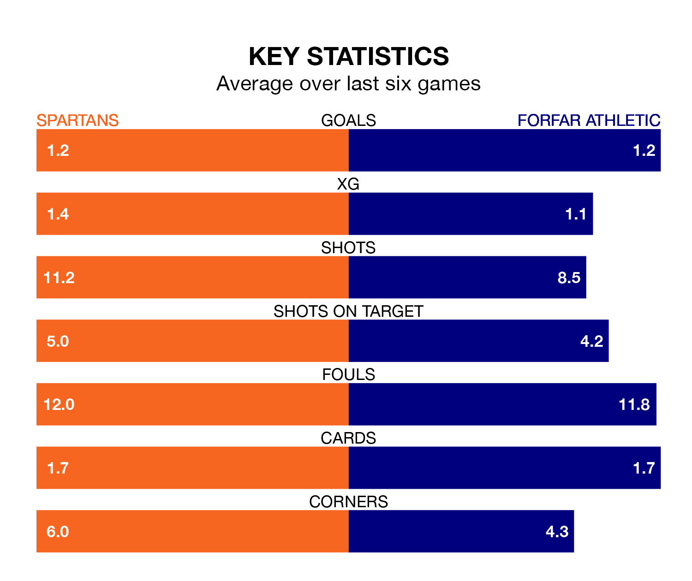

Two of League Two's meanest defences go head-to-head at the Ainslie Park Stadium on Saturday, when Forfar Athletic visit Spartans.
Only two sides – Stenhousemuir and Peterhead – have conceded fewer goals than Forfar to date: the away side have let in just 35 goals in 30 games.
The Spartans have conceded 38 goals in 30 games, giving them the joint-fourth tightest back line so far this season.
Key to the Loons' home form has been Marc McCallum, who has allowed 1.13 goals past him per 90 minutes, compared to 1.03 for Blair Carswell in the opposite net.
In Blair Henderson, Spartans have the league's most on-form striker so far this season. He has notched 15 goals in 29 appearances.
His goal rate of one every 167 minutes is quicker than that of Stuart Morrison, Forfar's top scorer with a goal every 324 minutes, and a total of eight goals in 29 games.
The Spartans are in disappointing form in League Two, with one win and three draws from their last six games.
With two wins and four draws over that period, Athletic's form is better – they have taken 10 points from 18, compared to the home team's six.
Spartans are fourth in the table after 30 games, of which they have won 12 and drawn 10, earning 46 points.
The Loons are two places behind Spartans in sixth, with seven wins and 15 draws putting them on 36 points.
In the last three years, Spartans and Forfar have played each other on three occasions. They won one each, and they drew once.
Their last meeting was on February 3, when Forfar won 1-0 at home.
Spartans's last match was on March 23, a 0-0 draw against Clyde.
Forfar drew 1-1 with Elgin City last time out, also on March 23, with Craig Thomson on the scoresheet.
Updated: 12:39 (UTC), 26/03/24